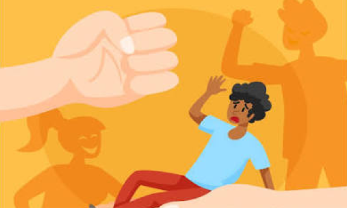
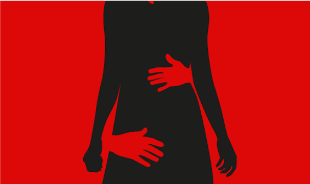
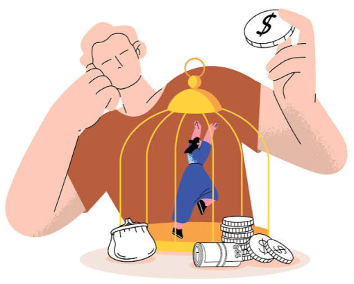

1. Violencia psicológica o emocional
Consiste en acciones que dañan la autoestima, la seguridad emocional o la salud mental de una persona. Puede manifestarse mediante insultos, humillaciones, amenazas, manipulación, chantaje o aislamiento.
 CENTINELA DIGITAL
CENTINELA DIGITAL
La violencia puede manifestarse de diferentes maneras: mediante golpes, palabras, amenazas, control, discriminación o acciones realizadas a través de internet. No siempre deja marcas visibles, pero puede afectar la seguridad, la autoestima y el bienestar de las personas.
Conocer los tipos de violencia es un primer paso para reconocerlos, prevenirlos y buscar apoyo.
Consiste en acciones que dañan la autoestima, la seguridad emocional o la salud mental de una persona. Puede manifestarse mediante insultos, humillaciones, amenazas, manipulación, chantaje o aislamiento.
Ocurre cuando se utiliza la fuerza física para causar daño, dolor o lesiones. No siempre deja marcas visibles y puede poner en riesgo la integridad de la víctima.

Comprende actos sexuales, acercamientos o conductas de carácter sexual realizados sin consentimiento de la persona. También incluye la presión, intimidación y coerción para obtener una conducta sexual.

Se presenta cuando alguien controla o limita injustamente los recursos económicos de otra persona, genera dependencia o ejerce poder sobre ella.

Consiste en dañar, destruir, ocultar o retener pertenencias, documentos, bienes u otros recursos de una persona con el propósito o el efecto de perjudicarla.